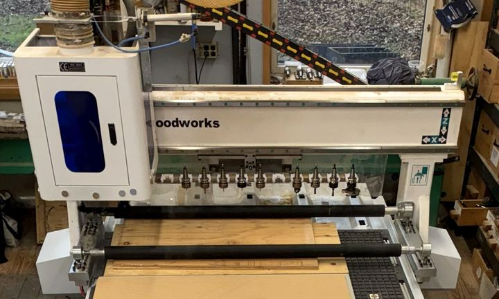
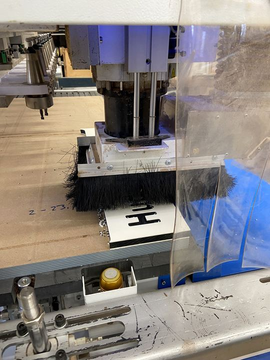
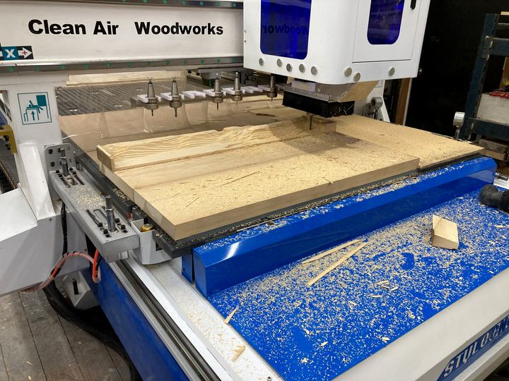

About
A fabrication shop in the Hudson Valley
Hudson Valley CNC is a CNC routing and fabrication shop outside New Paltz, New York. We work with homeowners, small businesses, towns, contractors, architects, artists and manufacturers across the Hudson Valley and beyond.
Built for real production
Our shop runs an industrial automatic tool-change router with a full 5′ × 10′ vacuum table. It swaps between 12 tools on its own mid-job, so parts that need drilling, pocketing, carving and profiling come off the table in one setup.
That means consistent parts, fast turnaround, and the capacity for both a single carved sign and a run of hundreds.


Our machine
STM1530C ATC router
| Cutting area | 60" × 120" (1500 × 3000 mm) |
|---|---|
| Z clearance | About 11.8" (300 mm) of travel |
| Spindle | 9 kW (12 HP) HSD air-cooled, up to 24,000 RPM, ER32 |
| Tool changer | 12-position linear automatic |
| Hold-down | Full vacuum table plus pressure rollers for warped sheet goods |
| Drives | Servo motors with reducers; rapids to about 50 m/min |
| Extras | Stand-alone rotary 4th axis; PCD diamond tooling |
Our commitments
- Clear quotes before we cut
- Honest turnaround dates
- Test cuts for anything new or delicate
- Programs kept on file for fast reorders
